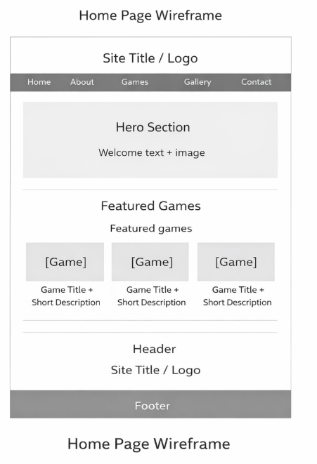
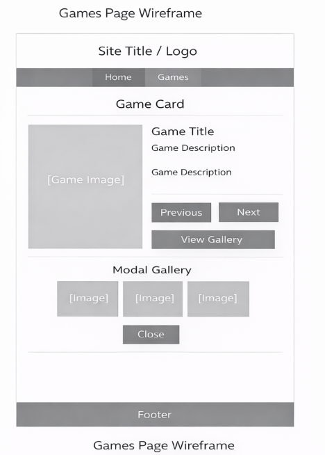

Overview
Purpose
This website is designed to showcase my interest in video games through an interactive and engaging experience. The site will allow users to explore different games, view descriptions, and interact with dynamic content such as game cards and image galleries. The goal is to create a visually appealing and user-friendly site that demonstrates both my hobby and my web development skills.
Audience
The intended audience for this website is other gamers and people who are interested in video games. It is also for friends, classmates, and anyone who wants to learn more about popular games and why they are enjoyable.
Dynamic elements
JavaScript will be used to create dynamic and interactive features on the website. I will use an array of game objects that contain information such as the game title, image, description, and gallery images. This data will be used to dynamically display content on the Games page. Users will be able to interact with buttons to cycle through different games, updating the displayed game card using DOM manipulation. Event listeners will be used to respond to user actions such as button clicks. Conditional statements will control which game is displayed. A modal window will also be implemented to display a gallery of images for each game when a button is clicked. Multiple functions will be used to organize the code, making it modular and easy to maintain.
Branding
Website Logo
Style Guide
Color Palette
Palette URL: https://coolors.co/1f1f1f-4caf50-ffffff-222222| Primary | Secondary | Accent 1 | Accent 2 |
|---|---|---|---|
| [#1F1F1F] | [#4CAF50] | [#FFFFFF] | [#222222] |
Typography
Heading Font: Press Start 2P
Paragraph Font: Roboto
Normal paragraph example
This is an example paragraph showing the default text style for the website. It demonstrates how readable and clean the content will appear to users.
Colored paragraph example
This paragraph shows how text will appear on a colored background. It is designed to be easy to read and visually consistent with the overall site design.
Navigation
Content
Home page (Includes About and Contact Sections)
Welcome to my gaming website! This site is all about my favorite video games and why I enjoy them. Gaming has been one of my favorite hobbies for years, and I enjoy exploring new worlds, completing challenges, and playing with friends. On this site, you will find information about my favorite games, images, and more.
Games Page
Some of my favorite games include Minecraft, Skyrim, and Assassins Creed: Valhalla. I enjoy these games because they offer different experiences such as creativity, competition, and teamwork. Each game provides unique challenges and gameplay styles that keep me engaged. Minecraft is a creative sandbox game where players can build and explore endless worlds. Skyrim is an open-world RPG that allows players to complete quests, fight enemies, and explore a large fantasy world. Assassin’s Creed Valhalla is an action-adventure game set in the Viking age, where players experience combat, exploration, and storytelling.
Wireframes
Home Page
The home page will include a header with the site title and logo, followed by a simple navigation bar. The main content will begin with a hero section introducing the site. Below that, there will be an About section with an image and text describing my interest in gaming. A Contact section will follow, featuring a form with fields for name, email, and message. The layout will be clean and stacked vertically for easy navigation. A footer will be included at the bottom.

Games Page
The games page will include a header and navigation bar consistent with the home page. The main section will feature a dynamic game card displaying an image, title, and description. Users will be able to click buttons to switch between games, updating the content dynamically. A "View Gallery" button will open a modal window displaying multiple images for the selected game. The layout will focus on interactivity while remaining clean and easy to use. A footer will be included at the bottom.
